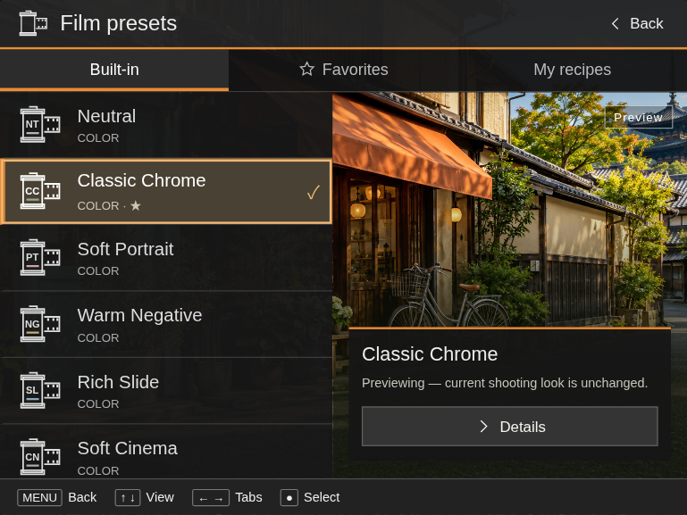
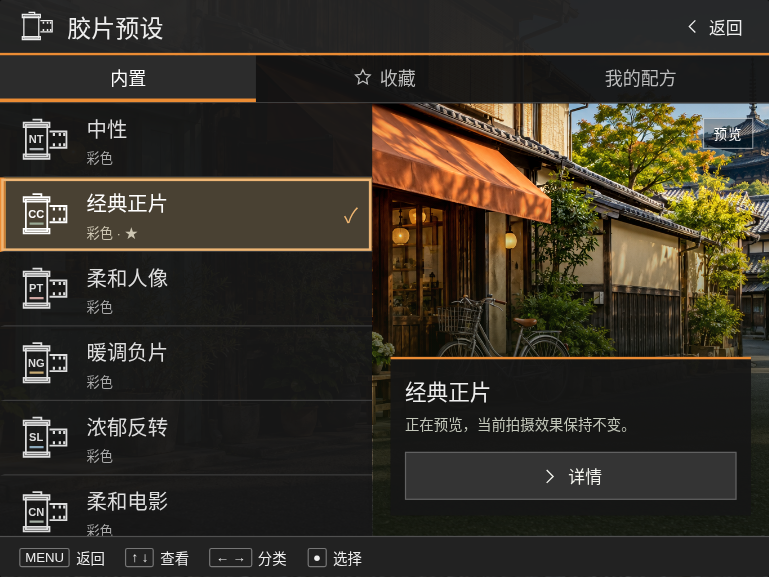
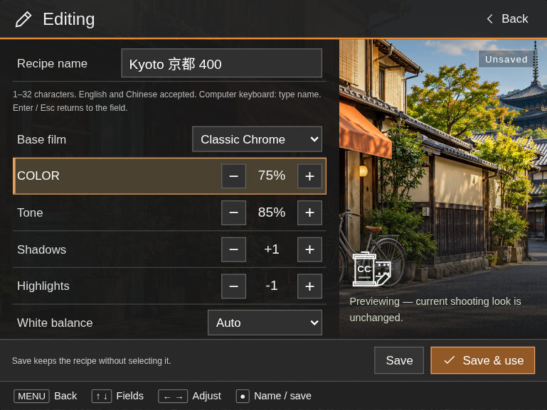
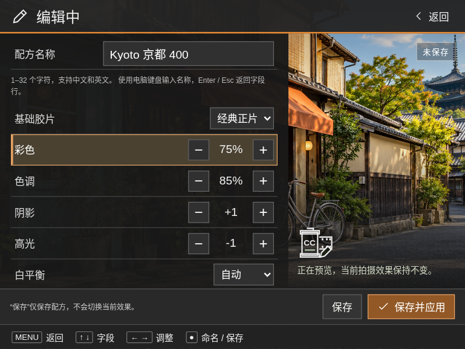
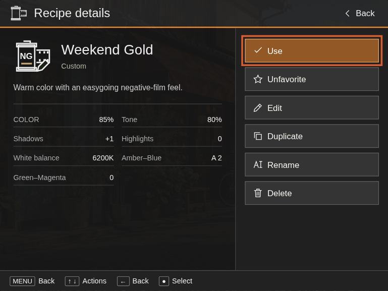
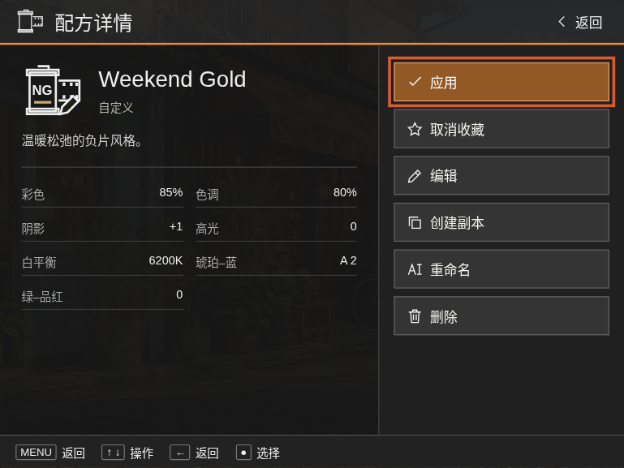

SONY A7R II · INTERFACE PROPOSAL
Film Lab / UI review
Browse a film preset. Create a named recipe. Keep your own looks.
English
简体中文






Browse a film preset. Create a named recipe. Keep your own looks.





